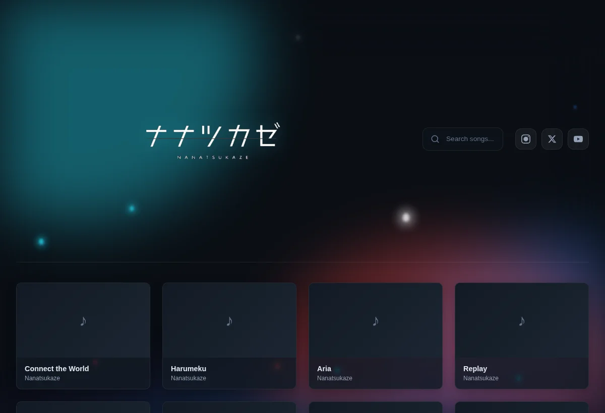

PROJECT NOTES
Public releaseNanatsukaze
A music gallery and player for the Japanese electronic duo Nanatsukaze.
A closer look
Open in new tab
The preview loads only when requested. If the host blocks embedding or playback, use Open in new tab.

What it does
- Browse songs and search by title or artist.
- Play, pause, seek, shuffle, and repeat through the YouTube player.
- Keyboard navigation and reduced-motion support.
Built with
Project status
The repository describes a live release. This does not establish a maintenance commitment or guarantee that every video remains available.
LESSONS FROM THE IMPLEMENTATION
Engineering notes
Embedding a player separates the interface from media delivery. Unavailable videos need an explicit recovery path.
Animated interfaces need reduced-motion options and smaller-screen performance limits.
Notes are based on the project source and documentation. Read the source